{kind=link}
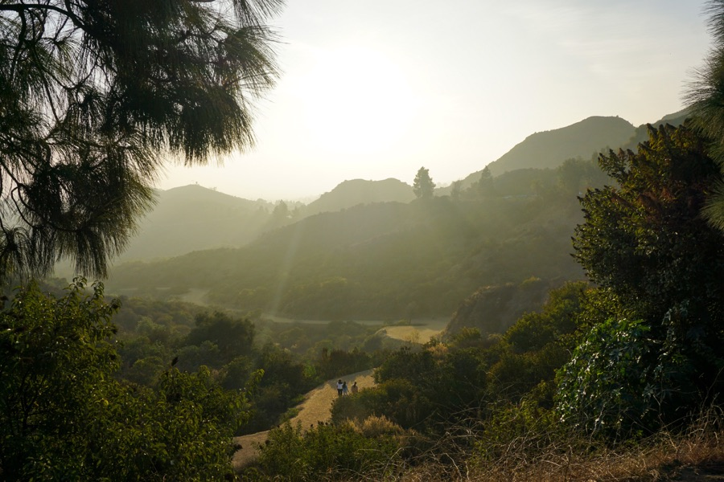
Morning in the mountains
A quiet view worth getting up early for.
I was born and raised in Nueva Ecija, a rice-growing province in the Philippines. I live on the campus of the university where my grandfather once taught and where my mom now teaches.
As a kid, I loved to tinker and build things—whether from mud, sticks, or bricks. Having a veterinarian for a mom also taught me to love and care for animals, especially dogs.
I was raised in a Witness family and learned about Jehovah from an early age. At the same time, growing up in an academic environment made school an important part of my life.
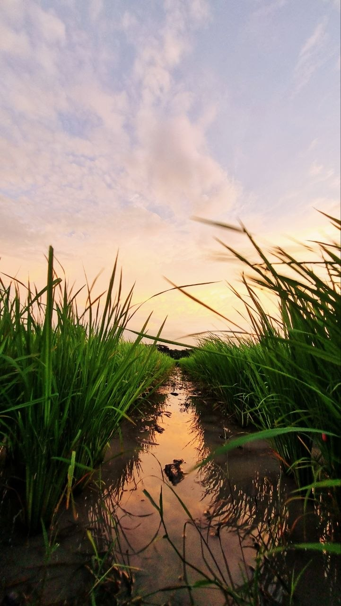
Wanting an adventure, I moved to the city for college and studied at the University of the Philippines Diliman in Quezon City. I began in Chemistry but eventually graduated with a degree in Electronics Engineering.
Little did I know that this would also be where I would grow spiritually. I was baptized during the second semester of my freshman year and was appointed as a ministerial servant two years later. Although I was away from home, Jehovah provided caring support through the brothers and sisters nearby.
During my studies, I enjoyed volunteering on construction projects and supporting a nearby Sign Language congregation.
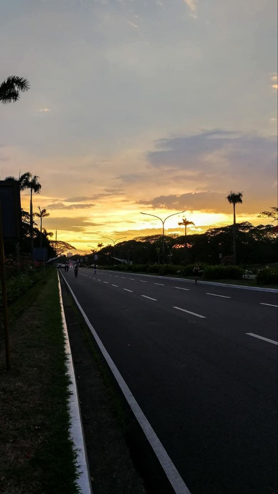
Today, I’m back in my hometown, serving alongside the brothers and sisters I grew up with. City life was a wonderful experience, and I grew a great deal from it, but nothing quite compares with the serenity of provincial life.
I work remotely in the software industry, which gives me flexibility to support the congregation. I also enjoy helping with the Audio/Video Department at assemblies and conventions, and visiting the Sign Language congregation from time to time.
Even though I enjoy the serenity of provincial life, I still love making time to travel, explore new places, and see more of the world.
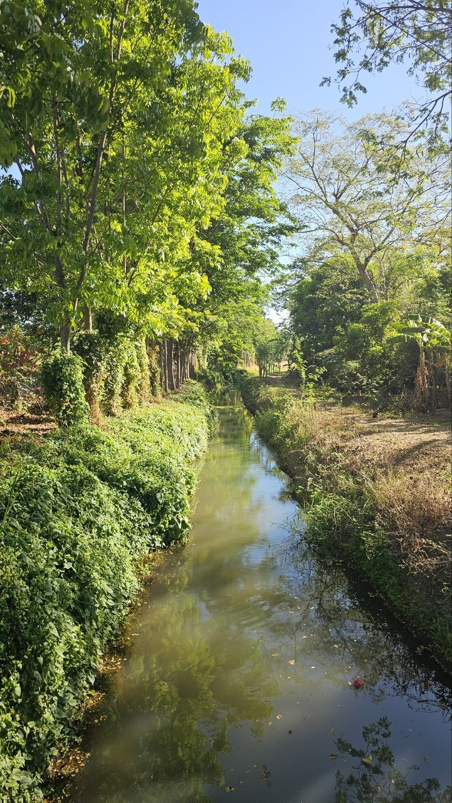
A small collection of places and views I’ve enjoyed seeing.

A quiet view worth getting up early for.
San Francisco as the lights begin to come on.
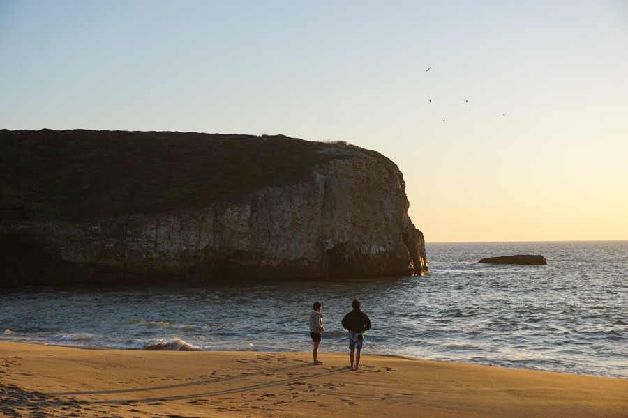
Sunset, waves, and a moment to slow down.
Traditional architecture against the city skyline.
A quieter look at traditional architecture.
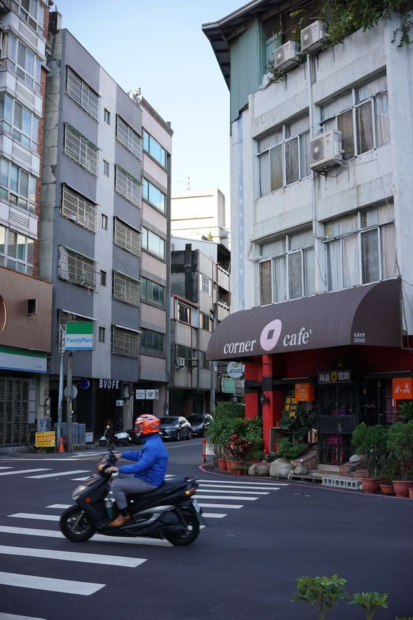
Everyday movement and details around a corner café.
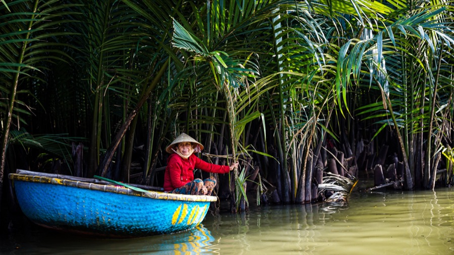
Bright colours in the middle of the palms.
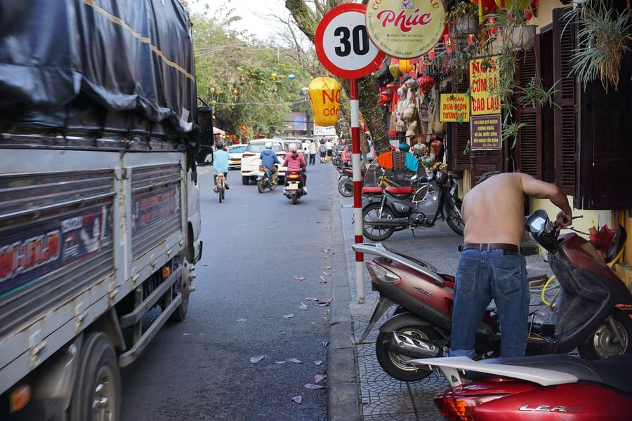
One of those small everyday scenes that stays with you.
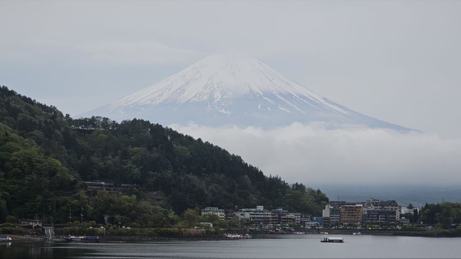
A calm view across the lake.
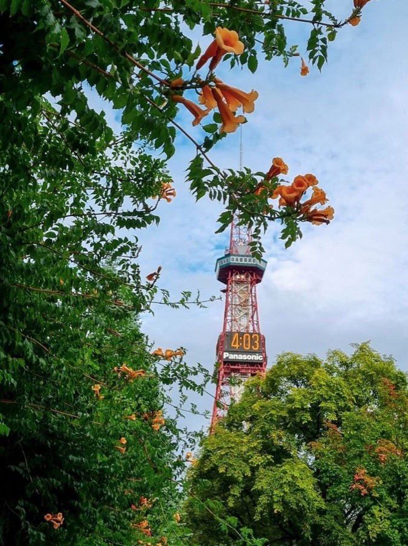
Bright flowers framing a familiar landmark.
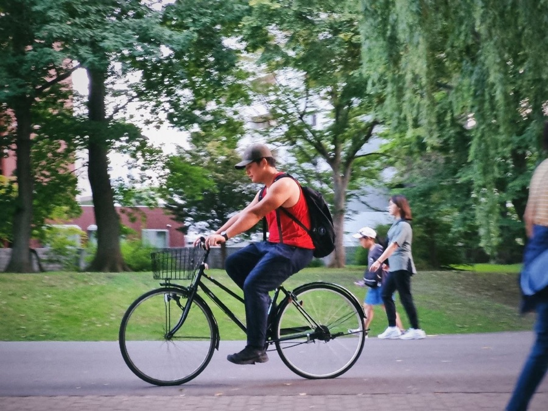
A little motion in the middle of a quiet park.
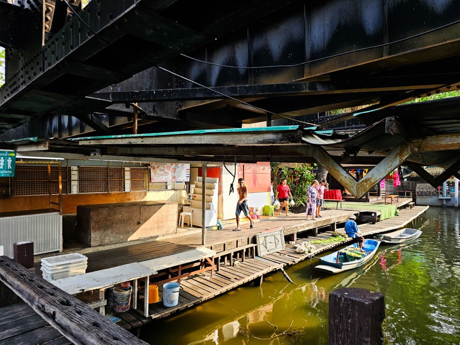
Daily life unfolding along the water.
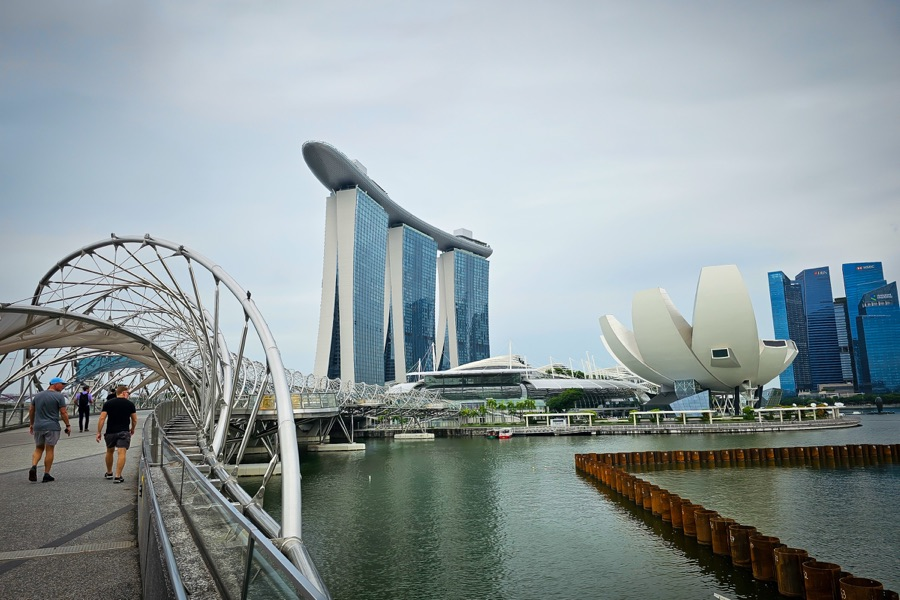
A walk through the Marina Bay skyline.
There’s more to life than a résumé. Here are a few things I enjoy and would happily talk about over coffee or a long walk.
I always enjoy getting lost in a good book and discovering a new perspective.
There’s nothing quite like seeing a place at a gentler pace on two wheels.
I love spending time outdoors, exploring a trail, and taking in a good view.
New places, local food, and the people I meet along the way always stay with me.
I enjoy noticing the little details and holding on to moments through a lens.
I’m always happy to trade recommendations or settle in for a great story on screen.
I enjoy the focus and satisfaction of bringing detailed builds to life, one small piece at a time.
I’m drawn to thoughtful ideas, beautiful details, and making things work well.
Trying a recipe, sharing a meal, and making something delicious for people are simple joys.
I enjoy sitting down at the piano and making time for music.
I enjoy finding a good cup of coffee and making time to slow down over it.
I’m also a big believer in slowing down, resting, and enjoying a quiet day with no plan at all.
{kind=link}
{kind=link}
{kind=link}
{kind=link}
{kind=link}
{kind=link}
{kind=link}
{kind=link}
{kind=link}
{kind=link}
{kind=link}
{kind=link}